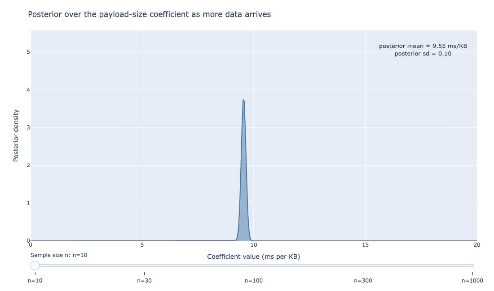
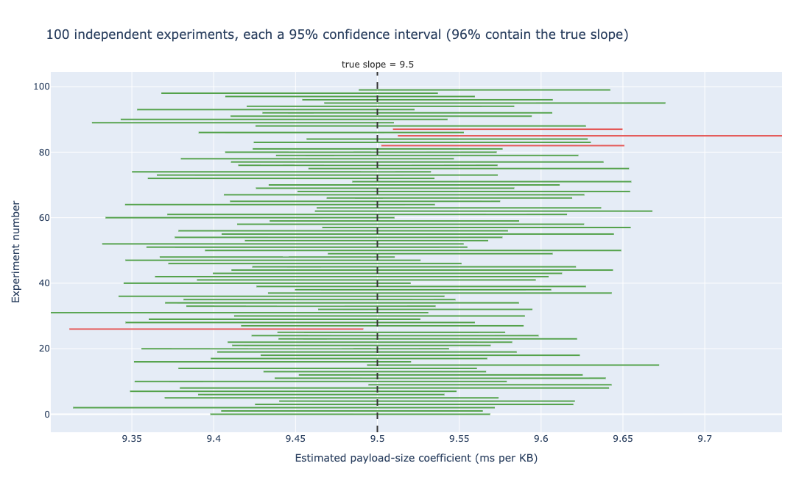
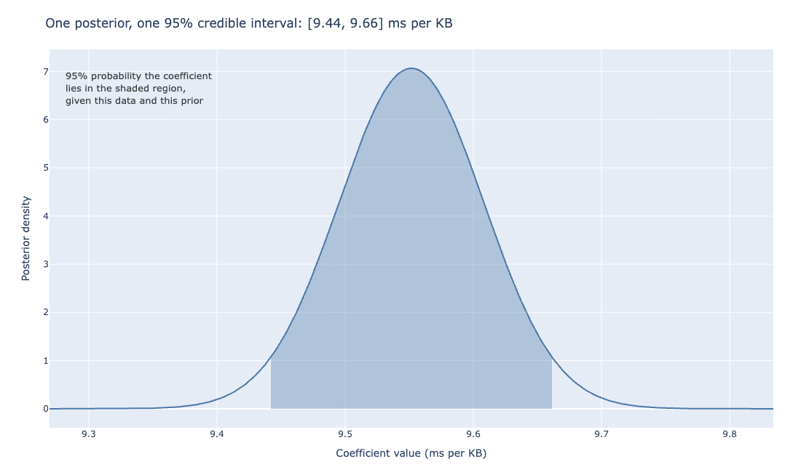
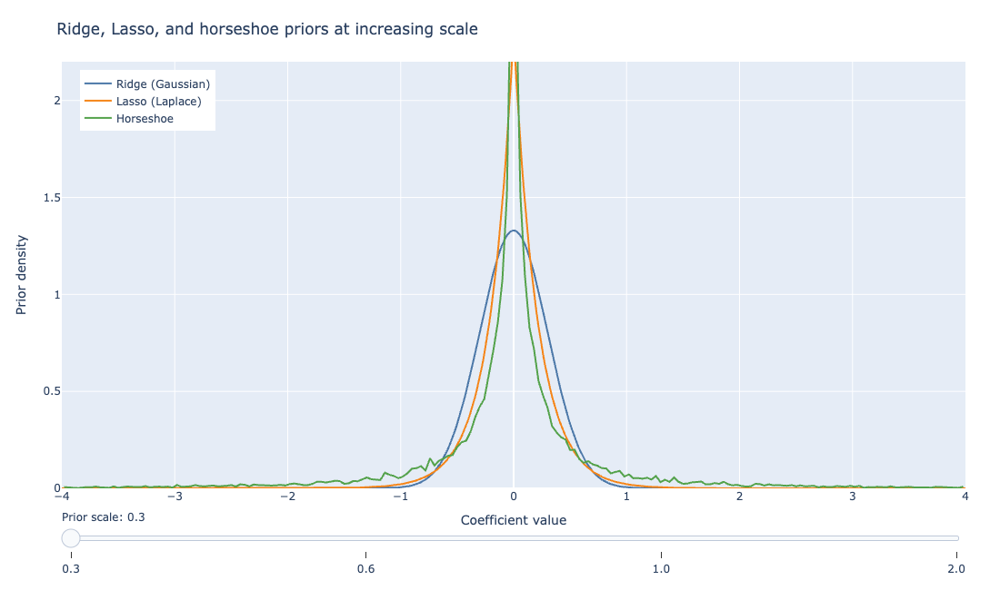
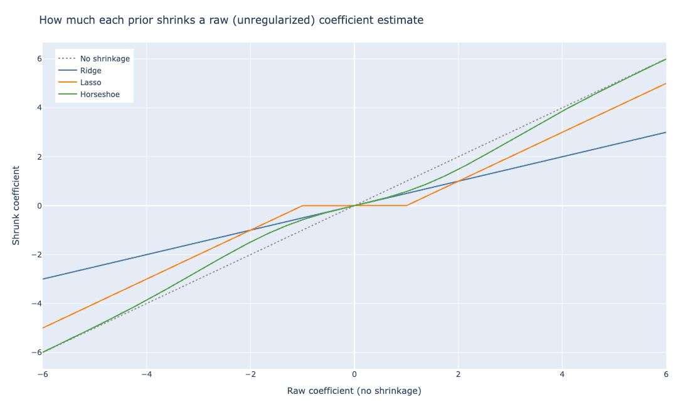
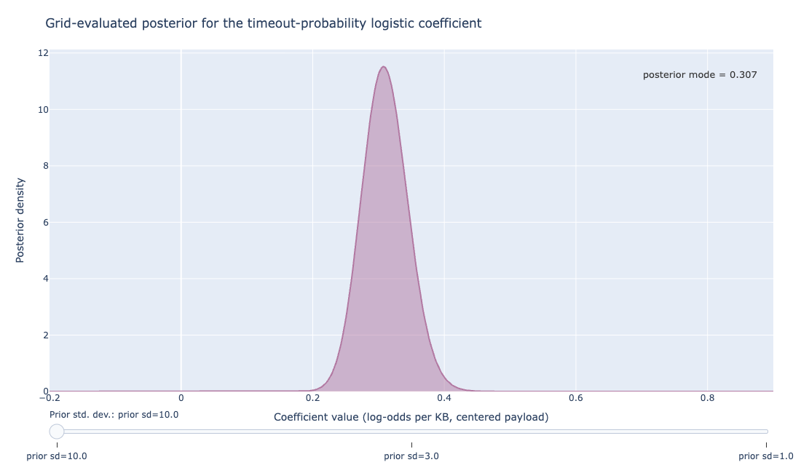
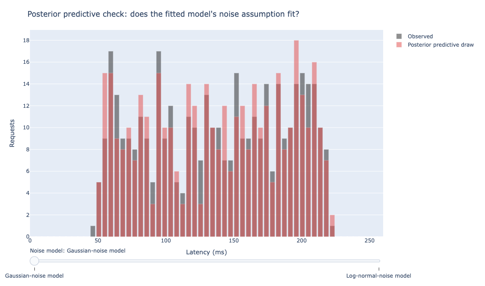

9 Bayesian Linear Regression and Regularization
Chapter 4 fit the checkout-API latency data with a single number for the payload-size slope: 9.55 milliseconds per kilobyte, computed by OLS from 40 requests.
Its Bayesian perspective section closed with a promise: a full posterior distribution over that slope, not just its most likely value, and a claim that a credible interval means something a confidence interval does not. This chapter cashes that promise in, with the numbers behind it.
9.1 The posterior over a single coefficient
Before seeing any data, a doctor guessing a patient’s height has some idea it is probably between four and seven feet, not twenty. That starting guess, before evidence updates it, is what a prior captures in a Bayesian model.
Bayesian linear regression starts from the same model OLS does, \(Y = \beta_0 + \beta_1 X + \varepsilon\), with \(\varepsilon\) normally distributed with variance \(\sigma^2\).
The difference is what happens to \(\beta_1\) before any data arrives: OLS treats it as an unknown constant to be estimated; Bayesian regression treats it as a random quantity with a prior distribution, \(\beta_1 \sim \text{Normal}(\mu_0, \tau_0^2)\). That distribution describes which values are plausible before the checkout API has served a single request.
A quick sanity check for whether a prior mattered at all: compare the posterior mean to the OLS estimate. If the two are close, the data dominated; if they differ, the prior is still shaping the answer.
When the prior and the likelihood are both Gaussian and \(\sigma^2\) is known, the posterior is also Gaussian, \(\beta_1 \mid \text{data} \sim \text{Normal}(\mu_n, \tau_n^2)\), and its mean and variance have a closed form that needs no sampling:
\[ \tau_n^2 = \left(\frac{1}{\tau_0^2} + \frac{S_{xx}}{\sigma^2}\right)^{-1}, \qquad \mu_n = \tau_n^2 \left(\frac{\mu_0}{\tau_0^2} + \frac{S_{xx}\hat\beta_1}{\sigma^2}\right) \]
where \(S_{xx} = \sum_i (x_i - \bar x)^2\) and \(\hat\beta_1\) is the OLS estimate. In other words, the posterior mean is a weighted average of the prior mean and the OLS estimate, with weights set by how much each one is trusted: a tight prior (\(\tau_0^2\) small) pulls the posterior toward \(\mu_0\); a lot of data (\(S_{xx}\) large relative to \(\sigma^2\)) pulls it toward \(\hat\beta_1\) instead.

Figure 9.1 traces the posterior starting from a weakly informative prior, \(\beta_1 \sim \text{Normal}(0, 5^2)\), centered on zero because the direction of the payload-latency relationship is left open before the data speaks, across five sample sizes drawn from the same simulated request stream Chapter 4 used.
At \(n=10\), the posterior is still wide and noticeably left of the true slope, since the prior still has meaningful influence. By \(n=1000\), the posterior mean lands at 9.50 milliseconds per kilobyte with a posterior standard deviation of 0.01, closely matching the true slope this simulation was built from.
This is because as \(S_{xx}\) grows, the \(\tau_n^2\) formula above gives the prior’s precision, \(1/\tau_0^2\), less and less weight relative to the data’s. Eventually the posterior mean converges on the OLS estimate regardless of where the prior started.
Recall from Chapter 4 that a flat prior recovers the OLS estimate outright; this figure shows the same convergence happening gradually as data accumulates instead.
9.2 What a credible interval claims
At \(n=40\), the same sample size Chapter 4’s OLS fit used, the posterior mean for the payload-size coefficient is 9.55 milliseconds per kilobyte with a posterior standard deviation of 0.06, giving a 95% credible interval of \([9.44, 9.66]\). Chapter 4’s OLS fit on the same data gave a 95% confidence interval of \([9.47, 9.63]\).
The two intervals nearly coincide numerically. What they claim is not the same thing.
Think of a net-making factory where 95% of nets come out wide enough to catch a fish of the true size, though there is no way to tell whether any single net pulled off the line is one of the good ones or one of the 5% that is too small. A 95% confidence interval is a statement about a procedure, not about this particular interval.

Figure 9.2 runs the same 40-request experiment 100 times, computes a fresh 95% confidence interval each time, and marks which ones contain the true slope of 9.5.
96 of the 100 intervals contain the true value, close to the nominal 95%. That is what “95% confidence” means: run the experiment many times, and about 95% of the intervals it produces will bracket the truth.
It says nothing about whether any single interval, including the one Chapter 4 computed, is one of the 95% that succeeded or one of the roughly 5% that missed. There is no way to tell from the interval alone.
A 95% credible interval claims something different and, for a single dataset, more direct.

Figure 9.3 shows the one posterior this section has been building, with the 95% credible region shaded.
Given the observed data and the stated prior, there is a 95% posterior probability that the true coefficient lies in \([9.44, 9.66]\). That is a claim about the parameter, conditional on the one dataset collected, not a claim about how a repeated procedure would behave across hypothetical datasets that were never observed.
A confidence interval is a statement about a procedure repeated many times; a credible interval is a direct probability statement about the parameter, given this one dataset. Conflating the two is one of the most common misreadings in applied statistics.
Recall the ASA’s 2016 statement on p-values from Chapter 2: a large share of the confusion around frequentist inference comes from reading a frequentist quantity as if it made a direct probability statement about the parameter. A frequentist interval does not make that statement; a credible interval does.
9.3 Ridge, Lasso, and the horseshoe as priors
Chapter 4 showed that Ridge regression is the posterior mode under an independent Gaussian prior on each coefficient, and the Lasso is the posterior mode under an independent Laplace prior, citing Park and Casella’s treatment of the Bayesian Lasso (Park and Casella 2008).

Figure 14.1 puts the two priors side by side with a third, newer alternative: the horseshoe prior (Carvalho, Polson, and Scott 2010).
Think of packing a suitcase: Ridge squeezes every item a little smaller. The Lasso throws out anything under a certain size entirely. The horseshoe does both at once, crushing clutter down small while leaving the items that matter close to full size.
The horseshoe prior has a spike at zero, taller than either the Gaussian’s or the Laplace’s, and tails that stay heavier than both further out.
It achieves this shape by giving each coefficient its own local shrinkage weight, drawn from a half-Cauchy distribution (a distribution over positive numbers that piles up most of its mass near zero but tapers slowly enough that an occasional large value stays plausible), multiplied by a shared global shrinkage parameter. Most coefficients get a tiny local weight and are crushed toward zero, while a few get a large local weight and pass through with almost no shrinkage at all.
That same spike-and-tail shape makes the horseshoe’s posterior harder to sample than either alternative: the local and global shrinkage weights interact to form a funnel-shaped geometry that a naive Markov chain Monte Carlo sampler can get stuck exploring.
PyMC and similar tools fit horseshoe models with a non-centered parameterization: the sampler draws a standardized version of each shrinkage weight and rescales it afterward, instead of sampling the weight directly at its natural scale. That keeps the funnel from tightening around the sampler as it explores.

Figure 9.5 makes the practical difference concrete: it plots the shrunk coefficient each prior produces against the raw, unregularized value that would come out of an ordinary regression with no penalty at all.
Ridge shrinks every coefficient by the same proportion, large and small alike. The Lasso applies a soft threshold, subtracting a fixed amount from every coefficient and zeroing out anything smaller than that amount. The horseshoe does neither: it shrinks small coefficients almost completely to zero while leaving large coefficients nearly untouched.
For a checkout API with dozens of candidate predictors, most of them irrelevant (a request ID hash, a client library version string encoded as a number, a rarely populated optional field), the horseshoe’s behavior is often closer to what an analyst wants: aggressive shrinkage on the noise predictors, none on the ones that matter.
Which of the three to reach for depends on what is known about the predictors before fitting anything. Ridge is the right default when most predictors are expected to matter at least a little and none should be forced all the way to zero, for instance a set of correlated latency sub-measurements (network time, queue time, handler time) that all plausibly contribute.
The Lasso is the right default when sparsity itself is the goal and a small number of predictors are expected to matter, since it can zero coefficients out entirely. That is useful for turning a wide feature set into a short list an engineer can act on.
The horseshoe is worth the added computation over the Lasso specifically when the analyst also wants the surviving coefficients to stay close to their unshrunk values instead of the Lasso’s uniform soft-thresholding, which shrinks a predictor that matters a great deal by the same fixed amount as one that barely matters at all.
9.4 Bayesian logistic regression, and reaching for PyMC
Only Ridge has a closed-form Bayesian posterior: a Gaussian prior combined with a Gaussian likelihood is conjugate, so the two combine algebraically into another Gaussian, the same derivation the opening section of this chapter worked through directly.
The Lasso’s Laplace prior is not conjugate to a Gaussian likelihood, so its full posterior has no closed form. Only its mode does, and that mode is where the Lasso point estimate comes from.
Recovering the full Bayesian Lasso posterior is what Park and Casella’s Gibbs sampler was built to do: an MCMC method, covered in more depth below, that updates one coefficient at a time by drawing from its distribution conditional on the current values of all the others.
That update is only possible in closed form here because the Laplace prior can be rewritten as a mixture of Gaussians with a random scale. This scale-mixture representation gives each coefficient’s conditional distribution a known, recognizable form to sample from, rather than one with no closed form at all (Park and Casella 2008).
Logistic regression adds a further complication on top of that: its likelihood is not Gaussian, so a Gaussian prior on its coefficients does not produce a Gaussian posterior, or any other named distribution with a known formula.
No choice of prior fixes this, since conjugacy is a property of a specific prior paired with a specific likelihood, and no standard prior is conjugate to the logistic likelihood.
Without a clean formula available, fitting a Bayesian logistic regression means approximating the posterior instead of deriving it, through Markov chain Monte Carlo (MCMC) sampling run by a probabilistic programming library rather than by hand (Salvatier, Wiecki, and Fonnesbeck 2016).
MCMC explores many candidate coefficient values by trial and error, lingering near ones that fit the data well and drifting away from ones that do not, until the pattern of visits traces out the posterior.
Recall the timeout-probability logistic model from Chapter 4, predicting whether a checkout request times out from its payload size. In PyMC, the Bayesian version of that model looks like this:
import pymc as pm
import arviz as az
with pm.Model() as timeout_model:
beta0 = pm.Normal("beta0", mu=0, sigma=10)
beta1 = pm.Normal("beta1", mu=0, sigma=3)
logit_p = beta0 + beta1 * payload_kb_centered
pm.Bernoulli("timeout", logit_p=logit_p, observed=timeout_observed)
trace = pm.sample(2000, tune=1000, chains=4, random_seed=11)
az.summary(trace, var_names=["beta0", "beta1"])pm.sample runs the No-U-Turn Sampler, PyMC’s default MCMC algorithm, across four independent chains and returns a set of posterior draws rather than a single number. az.summary then reports the posterior mean, standard deviation, and 94% highest-density interval for each parameter, computed directly from those draws.
That 94% is ArviZ’s own default width, not the 95% used earlier in this chapter; the two are different conventions, not different results for the same quantity.
It is also a different kind of interval: a highest-density interval (HDI) is the narrowest range that contains the stated probability, rather than the equal-tailed interval computed by hand for the conjugate Gaussian posterior earlier in this chapter.
For a symmetric posterior like that one, the two nearly coincide. For a skewed posterior they can differ noticeably: an equal-tailed interval always cuts the same probability from each tail regardless of the posterior’s shape, while the HDI does not.

Figure 9.6 shows what that posterior looks like for the payload-size coefficient, computed here by evaluating the posterior on a fine grid instead of sampling it, since the model has only one predictor and a grid gives a precise posterior where MCMC gives an approximation.
The posterior mode lands at 0.307 regardless of whether the prior’s standard deviation is 10, 3, or 1. With 300 observed requests, the likelihood dominates enough that a moderately informative prior barely moves the answer.
This is a useful thing to know before reaching for a Bayesian model at all: the extra machinery buys the most when data is scarce, a prior carries meaningful information, or the answer needs a full distribution rather than a point estimate for a downstream decision. It does not pay off automatically in every case, regardless of how much data is on hand.
Did the sampler converge?
Unlike the conjugate Gaussian case earlier in this chapter, pm.sample gives no guarantee its draws represent the posterior correctly. MCMC can fail quietly: a chain can get stuck in one region of the parameter space, or several chains can wander off and never agree with each other. Either way, the output still looks like a normal set of posterior draws unless it is checked.
Two numbers from az.summary catch most of these failures before they reach a report. Picture four friends separately guessing the outdoor temperature, then comparing notes: similar guesses mean the average is trustworthy, but one friend far off from the rest is a warning sign.
\(\hat{R}\) works on that same logic: it compares the variance within each of the four chains to the variance across all four, and a value above 1.01 means the chains have not mixed and have not converged on the same distribution.
ess_bulk, the effective sample size, estimates how many independent draws the correlated MCMC samples are worth; an effective sample size under a few hundred, even with thousands of raw draws, means the posterior summary is noisier than it looks.
PyMC also reports divergent transitions during sampling, a diagnostic flagging regions of the posterior its step size could not navigate. More than a handful of divergences means the model or its priors need reworking, not a number to note and move past.
9.5 Posterior predictive checks
A weather model can be confident in its own numbers and still be wrong if it never checks itself against what happened outside. A posterior predictive check is that reality check for a statistical model.
A posterior tells an analyst what the model believes about its parameters. It says nothing about whether the model itself is a reasonable description of the data.
A posterior predictive check closes that gap: draw parameter values from the posterior, simulate new data from the model using those draws, and compare the simulated data to what was observed (Gelman, Meng, and Stern 1996). In PyMC and ArviZ, that workflow is two calls:
with timeout_model:
ppc = pm.sample_posterior_predictive(trace, random_seed=11)
az.plot_ppc(ppc, kind="cumulative")
Figure 9.7 runs this check on a regression model for latency itself rather than the timeout classifier, comparing two different assumptions about the noise term.
The first assumes \(\varepsilon\) is normally distributed, the default behind both OLS and the conjugate Gaussian posterior used earlier in this chapter. The second draws \(\varepsilon\) from a distribution matching the log-normal noise Chapter 1 established for this data.
Under the Gaussian-noise assumption, the simulated draws spread symmetrically around the fitted line and undershoot the right tail the observed data has. Recall from Chapter 1 that checkout-API latency is right-skewed by construction, a hard floor near zero and an unbounded upside; a symmetric noise model cannot reproduce that shape no matter how its variance is tuned.
Switching the noise assumption to match the log-normal shape closes the gap in the tail. That is the kind of mismatch a posterior predictive check exists to catch before a model with a wrong noise assumption gets used to set an alerting threshold or a service-level objective.
A model can have a perfectly reasonable-looking posterior over its coefficients and still make this mistake, because the coefficients and the noise assumption are separate modeling choices. Checking the posterior alone would have missed it; checking what the model predicts against what happened did not.
A well-behaved posterior over a model’s parameters is not proof the model fits the data. Run a posterior predictive check before trusting any downstream decision built on that fit.
9.6 What carries forward
Every other predictive method in this book gets the same treatment in the chapters that follow: a Bayesian counterpart with its own posterior, its own priors, and its own honest accounting of what the extra computation buys over a point estimate.
The equivalence this chapter opened with (Ridge as a Gaussian prior, Lasso as a Laplace prior) is not a special case specific to linear regression.
It is the first instance of a pattern that recurs through cross-validation, splines, trees, and boosting alike: a classical method that produces one best answer, and a Bayesian version of the same method that produces a full distribution over answers, at the cost of more computation and more to explain.